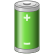
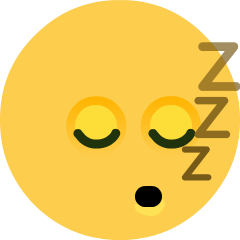
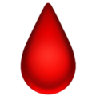
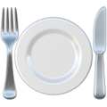
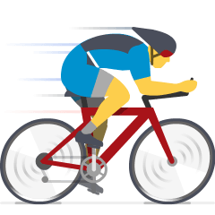
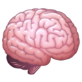
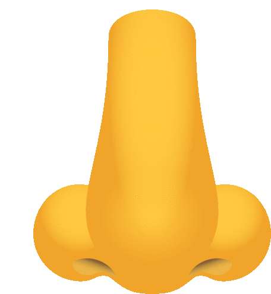
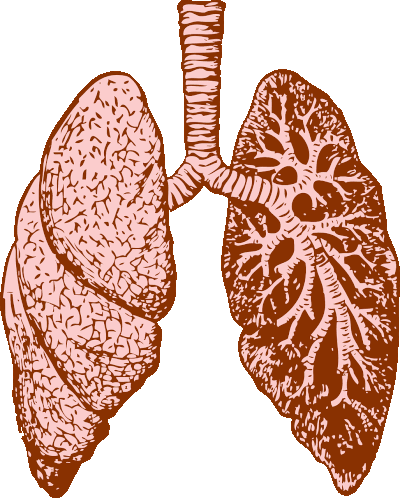
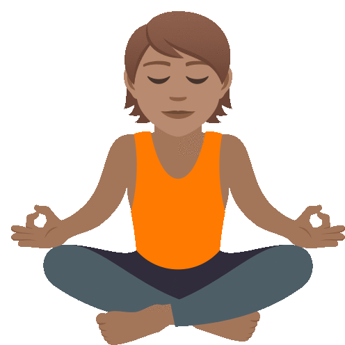
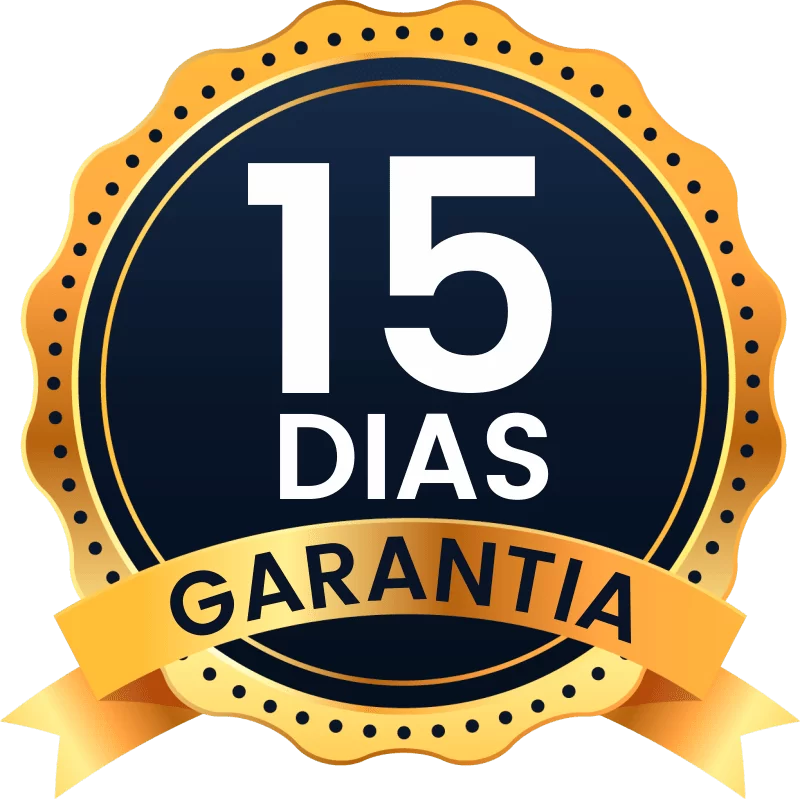

Especialmente no tocante à Ansiedade e Estresse, a Respiração Disfuncional tem tudo a ver com estas estatísticas preocupantes, pois aproximadamente 90% das ocorrências clínicas são causadas por desordens psicossomáticas e, quando investigadas as causas destas desordens psicossomáticas, identifica-se que a Respiração Disfuncional e a Hiperventilação tem relação direta, já que elas causam as reações que ativam os mecanismos de Ansiedade e Estresse, o que significa que, ao corrigir a Respiração, os demais problemas psicossomáticos também melhoram – inclusive podendo ser curados.
A importância da Respiração é negligenciada, há inúmeras disciplinas científicas para estudar os alimentos e a água que consumimos, mas a Ciência que estuda a Respiração é mais recente. Conseguimos ficar semanas sem nos alimentar, dias sem tomar água, mas apenas minutos sem Respirar.
Agora é hora de dar atenção àquilo que mais fazemos em nossa vida: RESPIRAR!
“Uma mente agitada, que pula de pensamento em pensamento, é um sanguessuga para a produtividade, esforço criativo e qualidade de vida. Ter uma mente focada é provavelmente o maior ativo em qualquer esfera da vida, seja qual for sua ocupação ou estilo de vida.”
Patrick Mckeown
REESTABELEÇA O FLUXO NATURAL DA SUA RESPIRAÇÃO E VIVA EM ESTADO DE PRESENÇA E CONEXÃO
O Curso Alquimia da Respiração é um percurso desenhado para você dominar o Elixir da Respiração, a Fórmula não secreta mais poderosa para você superar os estados mentais/emocionais desagradáveis resultantes de desequilíbrios psicossomáticos, desfrutar de um estado de consciência elevado e viver em estado de Presença e Conexão.
No contexto do mundo pós-Covid de mudanças tão profundas e aceleradas, Respirar corretamente te ajudará a superar os desafios destes tempos em que vivemos.
Abordaremos os principais tópicos da Ciência da Respiração e, com isto, você reeducará seu sistema para voltar a Respirar corretamente e desfrutar de todos os benefícios disto.
A Respiração Funcional equilibra o sistema nervoso autônomo, regula o PH do Sangue, promove maior liberação de O2, o que fortalece o Sistema Imune.
Alívio na Ansiedade e Estresse
A Respiração Funcional ativa o Nervo Vago e o Sistema Nervoso Parassimpático, o que gera um poderoso efeito de controle sobre Ansiedade e Estresse

Aumenta seu Nível de Energia
A Respiração Funcional libera mais Oxigênio para órgãos, músculos e tecidos e promove um descanso mais profundo, o que te deixa mais energizado.

Sono mais Profundo e Reparador
A Respiração Funcional também promove um Sono bem mais Reparador e Profundo, já que você fica mais relaxado e com mais Oxigênio circulando no seu corpo.

Melhor Pressão Sanguínea e Digestão
A Pressão Sanguínea é melhorada em função da normalização dos batimentos cardíacos e a Digestão é melhorada pela ativação do Sistema Nervoso Parassimpático.

Controle sobre sua Fome
Comemos muito por ansiedade. A Respiração Funcional traz controle sobre ansiedade e emoções, também trazendo controle sobre o que comemos.

Melhor desempenho no Esporte
A Respiração Funcional melhora nosso desempenho esportivo de inúmeras formas: libera mais O2 para os músculos, aumenta o VO2 Max e atrasa o início da fadiga.

Mais Produtividade e Concentração
Ao promover mais Oxigenação no Cérebro e te deixar mais relaxado pela ativação do Sistema Nervoso Parassimpático, você se torna mais concentrado e produtivo.
Paz Interior e Equilíbrio
Além de todos os benefícios citados, as técnicas de Respiração podem ser feitas como Meditação, o que potencializa os efeitos de te deixar equilibrado e em Paz.
Depoimentos
Conteúdo do Curso
Semana 1
Introdução ao Breathwork
Respiração Nasal vs Respiração Bucal
Teste de Tolerância ao CO2
Exercícios respiratórios - Breathe Light
Semana 2
Bioquímica e Biomecânica da Respiração
Gases envolvidos na respiração e Efeito Bohr
Músculos envolvidos na Respiração
Disfunções respiratórias
Técnicas de Respiração para relaxamento
Semana 3
Psicofisiologia da Respiração
Bioquímica e Biomecânica e seus efeitos na Mente e Emoções
Variabilidade da Frequência Cardíaca - Respiração Coerente
Técnicas de Respiração para Alívio da Ansiedade, Ataque de Pânico, Mente Acelerada e Estresse
Semana 4
Respiração e exercícios físicos
Técnicas para melhorar performance esportiva
Banho gelado e Imersão no gelado
Técnicas de Hiperventilação
Semana 5
Respiração, Meditação e Espiritualidade Universal
Pranayamas e Breathwork
Técnicas de Respiração para superar insônia, ronco, apneia do sono e ter sono mais profundo.
Como tornar a Respiração Funcional um hábito
O Facilitador
Olá, sou Pedro Contesini e serei seu Instrutor de Breathwork a partir de agora!
Sou Instrutor de Respiração/Breathwork certificado pela Oxygen Advantage, Instrutor e praticante de Yoga e Meditação ha 15 anos e Coach formado pela Sociedade Brasileira de Coaching.
Tive diferentes episódios de saúde mental em minha vida - depressão, síndrome do pânico, estresse e ansiedade - e, para superá-los, estudei muitas disciplinas para encontrar as melhores soluções em saúde mental.
Após conhecer muitas ferramentas, decidi focar na Respiração porque ela é a ferramenta mais simples e potente para garantir uma boa Saúde Mental.
Investimento

Para solicitar o reembolso, basta entrar na área logada da Plataforma Hotmart e fazer a solicitação. O reembolso será liberado, sem burocracia nenhuma, em até 15 dias. Garantimos, porém, que, se você fizer as práticas sugeridas, ficará extremamente satisfeito e não verá motivo para solicitar o reembolso.
R$397 ou 12x de R$39,00
Acesso gradual aos módulos para facilitar a prática e o aprendizado
Você está disponível para sessões de Respiração 1 a 1?
Sim, estou disponível para realizar sessões 1 a 1, o que gosto bastante de fazer, inclusive.
É possível fazermos apenas 1 sessão, mas o ideal é que sejam realizadas ao menos 4 sessões, pois este é o prazo ideal para que seja observada a evolução de cada praticante, que todas as técnicas para os objetivos da pessoa sejam passadas e os resultados comecem a aparecer.
Nos atendimentos 1 a 1, são passadas as técnicas de respiração específicas para o que o praticante está buscando, pois cada objetivo possui formas diferentes de ser atingido.
Clique no botão de Whatsapp no final da página e agende seu atendimento direto comigo.
Quanto tempo até começar a ver resultados do Curso?
Depende de cada pessoa e de seu objetivo.
Para sentir algum nível de relaxamento, em uma sessão de 10 minutos você já sente os efeitos.
Para melhorar a ansiedade e o estresse, alguns dias de prática já podem trazer resultados.
Para melhorar o sono, com alguns dias de prática também você já pode sentir resultados.
Para melhorar a performance no esporte, algumas técnicas trazem efeitos imediatos e, para uma melhora geral na Saúde, algumas semanas são necessárias.
Isto tudo exige, porém, prática, dedicação e disciplina, sem o que você não sentirá os resultados.
As informações do Curso são científicas ou são achismo?
Sou Instrutor de Breathwork na Oxygen Advantage, escola de Breathwork internacionalmente reconhecida.
Toda a Metodologia da Oxygen Advantage é baseada em milhares de pesquisas científicas e por tudo o que existe de mais avançado no campo das Ciências da Saúde.
Para mais informações, acesse o site da Oxygen Advantage clicando AQUI
Onde acessarei o Curso? Ele estará sempre disponível?
O curso está hospedado na Plataforma Hotmart, a maior e mais segura plataforma de Cursos Online do Brasil.
Você terá acesso ao Curso por 2 anos, até quando poderá acessar o Curso com todas as atualizações futuras.
A garantia do Curso é de 15 dias, prazo para solicitar o reembolso, mas sabemos que, se praticar dedicadamente, sentirá os resultados e quererá se aprofundar ainda mais.
Torne-se um Alquimista da Respiração
Supere Ansiedade e Estresse.
Ganhe controle sobre sua Mente e Emoções.
Expanda sua Consciência e tenha mais Paz Interior.
Tenha um sono Profundo e Reparador.
Tenha um melhor desempenho nas atividades físicas e esportes.

 Semana 1
Semana 1